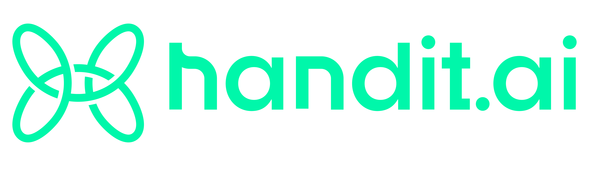

✓ Step 1: Observability
→ Step 2: Evaluation
Step 3: Self-Improving
🎉 Great job! Your AI tracing is active
You're 33% there, Sarah!
Hi Sarah,
Awesome news! Your AI observability is working perfectly. We can see your customer_support_agent
has been traced 247 times over the last 12 days.
✅ What's Working
You can see every AI operation, timing, inputs, and outputs in your dashboard.
But you're missing the quality insights that come with automated evaluation.
⚠️ What You're Missing Without Evaluation
📊
Quality scores for every response
🎯
Accuracy & completeness tracking
📈
Performance trends over time
🚨
Automatic quality alerts
🔍
Hidden issue detection
🎨
Preparation for self-improvement
🚀 Add Evaluation in 10 Minutes
Since your observability is already working, adding evaluation is super quick!
1
Connect evaluation models in Settings
2
Create 2-3 focused evaluators
3
Associate them to your customer_support_agent
Get Help Adding Evaluation (Free)
Follow Step 2 Guide
Pro tip: Once evaluation is running, you'll automatically unlock
self-improving AI (Step 3) that generates better prompts based on your quality data.